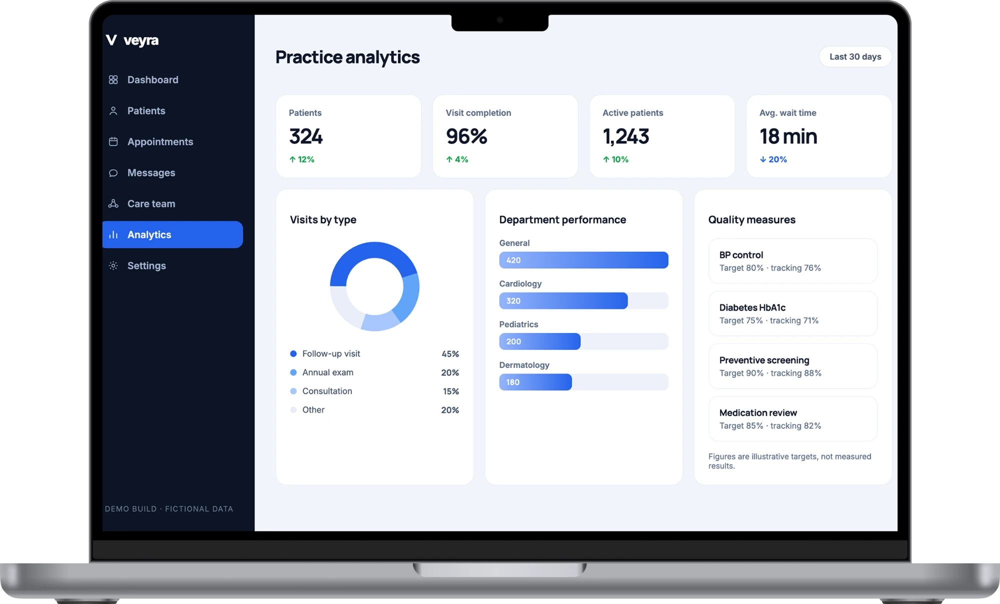
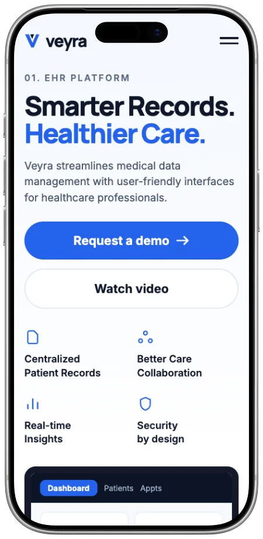

01
Every edit keeps its past
Open any note and read its history — who changed what, and when. Nothing is overwritten in place.
Check it: amend a note, reopen v1.
01. EHR Platform
Veyra streamlines medical data management with user-friendly interfaces, enabling healthcare professionals to access, update, and monitor patient records efficiently.


Example clinic profiles — every organization named here is fictional
02. The record model
Charting, scheduling, prescribing and billing write to one patient timeline. Everything else in Veyra is a view onto it.
Notes, labs, imaging and medications in a single scrollable history.
Tasks, messages and referrals attach to the chart they belong to.
Panel and operational metrics read the same data, live.
Illustrative interface. Patient and clinical values are fictional.
03. The platform
Every menu below opens the working surface behind it. Move through the sidebar the way a clinician would on a Tuesday morning.
Demo build · fictional data
Latest lab results for Anna Heraidine are ready for review.
Reviewed. Let’s continue the current care plan.
Agreed — I’ll note it in the chart.
Messaging is illustrative; nothing is sent from this page.
Figures are illustrative targets, not measured results.
Controls shown in their demo state; nothing here is saved.
This platform preview is an illustrative interface. Every patient, clinician, appointment and figure in it is fictional.
04. Getting started
The implementation path this concept is designed around: charts migrated, templates mapped, and support alongside your staff through the first week of clinic.
Demographics, problems, medications and documents are imported from your current system, with duplicates reconciled before go-live.
Templates, order sets and schedules are intended to be shaped around your specialty, then reviewed with the providers who will use them.
The plan covers support through the first full clinic week, with a named lead staying with the practice afterwards.
These steps describe the intended implementation process for this product concept, not a service already delivered.
05. Design targets
These are the targets the product is designed against — not measured results. Veyra is a concept with no deployed sites behind these figures.
How we would measure this06. Secure by design
Not a badge on a page — a ledger you can read. The design keeps an append-only trail of who opened what, when, and what changed.
TLS 1.3 on the wire, AES-256 on disk, keys rotated on a fixed schedule.
Roles grant the minimum a job needs; break-glass access is possible, and never quiet.
Every amendment keeps its predecessor, its author and its timestamp.
Export the full audit log on demand, in a format another system can read.
Illustrative entries. Names, identifiers and events are fictional.
Veyra is a product concept. The controls above describe the security model it is designed around — not a certification, an audit result or an implemented system.
07. Why a clinic would trust this
Four things a practice can check for itself, on the first day, without taking anyone's word for it.
01
Open any note and read its history — who changed what, and when. Nothing is overwritten in place.
Check it: amend a note, reopen v1.
02
The part most systems leave out. Opening a chart is an event, and it is recorded like any other.
Check it: view a chart, read the trail.
03
Charts, documents and audit logs export in standard formats — during the contract, and after it ends.
Check it: export before you commit.
04
HL7 v2 and FHIR R4 interfaces, so a lab, an HIE or your next system can read what you have.
Check it: request the FHIR endpoints.
08. In practice
Desktop at the nurses’ station, phone on rounds, and the same chart underneath both.
The full chart, the day’s list and every queue on one screen.
Approvals, results and messages from a pocket.
4 patients today
Problems, medications and the people responsible sit beside the record — never in another tab.
Illustrative interfaces. Every patient, clinician and value shown is fictional.
See Veyra against your own workflows. A 30-minute walkthrough with a clinical specialist — no slide deck.